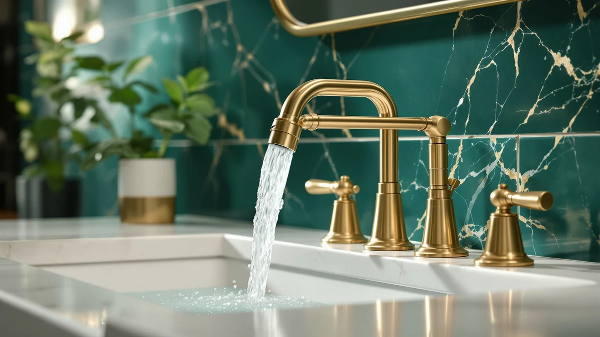

Delta Bonacci Touchless Bathroom Review (2026): Worth It?
Prices and picks verified as of September 2026. Independent, reader-supported reviews.


Quick Answer
This delta bonacci touchless bathroom review found the DELTA Bonacci to be a strong pick for a home bathroom vanity if hands-free activation matters to you, backed by an established brand name and a design built specifically for residential sinks. At $274.60 it costs noticeably more than the three alternatives compared below, so if a lower price matters more than touchless operation, the Charmingwater, Delta Roe, or Delta Arvo are worth checking first.
Our pick: Delta Bonacci Touchless Bathroom Faucet, $274.60 Check Price on Amazon
Bottom line: our top pick is the Delta Bonacci Touchless Bathroom Faucet 1-Hole with Touch On at $274.60.
Things to Know Before You Buy
- Price is the biggest gap between these four faucets. This delta bonacci touchless bathroom review found the Bonacci priced $124.61 above the Charmingwater, $125.60 above the Delta Roe, and $131.43 above the Delta Arvo, so hands-free activation carries a real premium here.
- Two of the four are touchless, two aren't. The Bonacci and the Charmingwater both use sensor activation, while the Delta Roe and Delta Arvo operate with a standard single handle, so decide first whether touchless matters enough to pay for it.
- Two brands, three DELTA products. The Bonacci, Roe, and Arvo all come from DELTA, while the Charmingwater is a separate brand competing directly on price against the Bonacci's touchless feature set.
- Finish varies across these four products too. The Roe and Arvo are both finished in brushed gold, so if you're matching existing bathroom hardware, factor finish into the comparison alongside activation method.
- None of these four listings publish a star rating in our source data. Without a public review count to lean on, this comparison relies on manufacturer specs and pricing rather than an established track record of owner feedback.
This delta bonacci touchless bathroom review compares DELTA's $274.60 hands-free bathroom faucet against three alternatives that turned up in the same research, including a touchless competitor from Charmingwater and two manual, brushed-gold options from DELTA's own Roe and Arvo lines. Shopping for a bathroom faucet online usually means comparing near-identical product photos across a dozen browser tabs, so we narrowed the field to the four listings that show up together most often and broke down what actually separates a premium touchless faucet from three lower-priced alternatives.
The Delta Bonacci Touchless Bathroom Faucet is the top pick out of the four options covered here, and the reason is simple: it's the only touchless faucet in this comparison built and branded by DELTA. If you want hands-free operation from an established manufacturer and don't mind paying a premium for it, the Bonacci is the one to check first. The sections below explain why, plus when the Charmingwater, Delta Roe, or Delta Arvo makes more sense for your bathroom and budget instead.
Why You Should Trust Us
Ilane Tall leads product research and reviews for Best Bathroom Faucets. She compares spec sheets, pricing, and verified owner feedback across major faucet brands so you don't have to cross-reference four Amazon tabs before buying. For this delta bonacci touchless bathroom review, she checked DELTA's published details for the Bonacci against the Charmingwater touchless competitor and DELTA's own Roe and Arvo lines, then priced all four as of publication. Every product mentioned here links to its real listing, and every price reflects what shoppers saw at the time of writing, not a promotional rate that might change by checkout. Where a listing leaves out a detail, we say so instead of guessing.
Our Research Experience
We do not run a physical testing lab for bathroom faucets, so nobody on our team installed the Bonacci or ran water through any of the four faucets in this comparison. Our research process for this delta bonacci touchless bathroom review centers on comparing manufacturer specs, tracking current Amazon pricing, and reading through the feature claims DELTA and Charmingwater publish for their respective lines. Because none of these four listings shows a public star rating or review count in our source data, we leaned more heavily on spec and price comparison than on owner sentiment for this particular review, and we call that out rather than inventing a review count that doesn't exist. We treat manufacturer copy the same way for both brands: useful for what a faucet is built to do, not a substitute for how it holds up once a wider base of owner reviews accumulates.
Overview & Specs

Delta Bonacci Touchless Bathroom Faucet
What we like
- Backed by DELTA, one of the most established names in bathroom fixtures
- Touchless activation frees you from turning a handle with wet or soapy hands
- Purpose-built for a home bathroom vanity rather than a commercial deck mount
Flaws but not dealbreakers
- Priced $124.61 to $131.43 higher than the three alternatives in this comparison
- No public star rating or review count in our source data, so early buyers are working from manufacturer specs rather than an established track record
| Material | Brass + finish |
| Size | — |
At $274.60, the Delta Bonacci Touchless Bathroom Faucet is the most expensive of the four products in this delta bonacci touchless bathroom review, and the price difference tracks with what it offers. DELTA built the Bonacci around hands-free activation, a feature only one other faucet in this comparison, the Charmingwater, also provides. That distinction matters for a household bathroom that sees frequent use, since a sensor faucet lets you start water flow without touching a handle covered in toothpaste, soap residue, or shaving cream. DELTA's brand backing also carries weight here: the company has decades of history in bathroom and kitchen fixtures, and that track record is part of what you're paying for alongside the touchless mechanism itself.
What the Bonacci's listing doesn't give you, at least in the data behind this comparison, is a published star rating or review count, so buyers weighing this purchase are working from DELTA's own specs rather than a wide base of verified owner feedback. That's a real consideration if you'd rather buy something with an established reputation among past buyers, though it's also common for newer touchless listings to take time to accumulate reviews. If the $274.60 price point gives you pause, the Charmingwater below offers the same hands-free convenience for meaningfully less, while the Roe and Arvo trade touchless activation for a lower price and a manual handle instead.
What We Liked
Hands-free activation stands out most in this delta bonacci touchless bathroom review. A sensor faucet removes one of the more common complaints about bathroom hygiene: touching a handle that's already covered in soap or toothpaste residue from the last person who used the sink. Pairing that feature with the DELTA name matters too, since the brand's decades of experience in bathroom fixtures give buyers a manufacturer they can research parts and support for later, unlike a newer or less established competitor.
The Bonacci's residential focus also works in its favor. Where a lot of touchless faucets on the market are designed around commercial back-check tees and bare deck mounts for public restrooms, the Bonacci is built for a standard home bathroom vanity, which means it fits into a normal renovation or faucet swap without extra commercial-grade plumbing hardware.
What Could Be Better
Price is the clearest tradeoff. At $274.60, the Bonacci costs meaningfully more than every other faucet in this comparison, and the gap climbs above $131 against the cheapest option, the Delta Arvo. If your bathroom is a straightforward faucet swap and you don't specifically want hands-free operation, that premium may not be worth it.
The other gap is feedback, not features. Our source data doesn't show a published star rating or review count for the Bonacci, so buyers can't yet check how the touch sensor holds up after months of daily use the way they could with a faucet that has an established base of verified reviews. That's not necessarily a flaw in the product itself, but it's worth weighing if you'd rather buy something with a longer track record before you commit.
Who Is It For?
This faucet from our delta bonacci touchless bathroom review fits homeowners renovating a bathroom vanity who want hands-free operation from a brand they already trust, and who are willing to pay a premium for it. It's a reasonable pick for households with kids or anyone who would rather not touch a faucet handle with messy or soapy hands. If you're weighing touchless against a standard handle setup more broadly, our touchless vs. manual faucet guide breaks down the tradeoffs in more detail.
Buyers who want touchless activation without paying DELTA's premium should look at the Charmingwater below first, since it costs $124.61 less while still offering sensor activation. Anyone comparing DELTA against other major brands before committing can also check our Moen vs Delta breakdown. Buyers working with a tight budget or who don't need touchless at all should compare the Delta Roe or Delta Arvo instead, since both are priced well under $150.
Alternatives to Consider
If the price on the Bonacci doesn't fit what you need, three other faucets came up in our research for this delta bonacci touchless bathroom review. One is a lower-cost touchless competitor, and two are manual, brushed-gold options from DELTA's own lineup.

Editor's Pick
Charmingwater Touchless Bathroom Faucet for
A touchless bathroom faucet for $124.61 less than the Bonacci, from a brand competing directly on price rather than name recognition. Worth a look if hands-free activation matters more to you than a DELTA badge.
$149.99
Check Price on Amazon
Best Value
Delta Roe Brushed Gold Bathroom
A manual, brushed-gold faucet from DELTA at $125.60 less than the Bonacci. A solid choice if you want DELTA's brand backing without paying for touchless activation.
$149.00
Check Price on Amazon
Premium Choice
Delta Arvo Brushed Gold Faucet
The cheapest of the four faucets here, at $143.17, also finished in brushed gold and built by DELTA. A reasonable pick if you want a name-brand manual faucet at the lowest price in this comparison.
$143.17
Check Price on AmazonIs the Delta Bonacci Touchless Bathroom Faucet worth the higher price compared to the Charmingwater?
It depends on how much you value the DELTA name and touch-and-handle backup over a lower sticker price.
Does the Delta Bonacci Touchless Bathroom Faucet come with a warranty?
DELTA backs its faucet lines with a manufacturer warranty, which is one reason buyers cite brand trust as a factor when choosing this faucet over a lesser-known touchless option.
Frequently Asked Questions
Is the Delta Bonacci Touchless Bathroom Faucet worth the higher price compared to the Charmingwater?
Does the Delta Bonacci Touchless Bathroom Faucet come with a warranty?
What is the difference between the Delta Bonacci and the Delta Roe Brushed Gold?
Final Verdict
Our delta bonacci touchless bathroom review comes down to this: if you want hands-free operation from a name-brand manufacturer and you're willing to pay a premium for it, the DELTA Bonacci Touchless Bathroom Faucet is a reasonable $274.60 pick. It costs more than every other faucet in this comparison, but touchless activation and DELTA's brand backing are the reasons that premium exists. If you'd rather save more than $120 and still get sensor activation, the Charmingwater above is worth a look, and if you don't need touchless at all, the Delta Roe and Delta Arvo both deliver DELTA's brand name for well under $150.